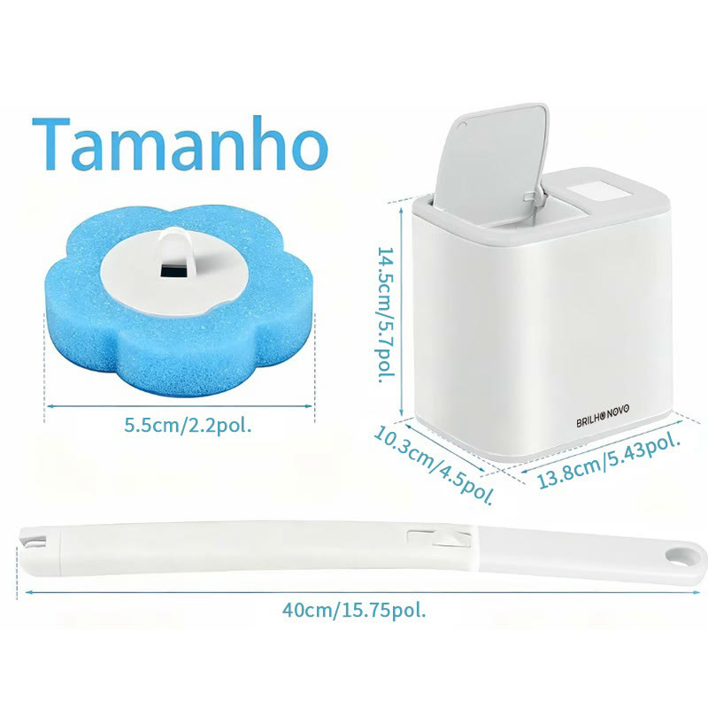
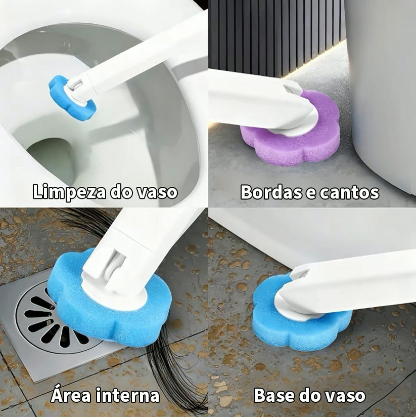
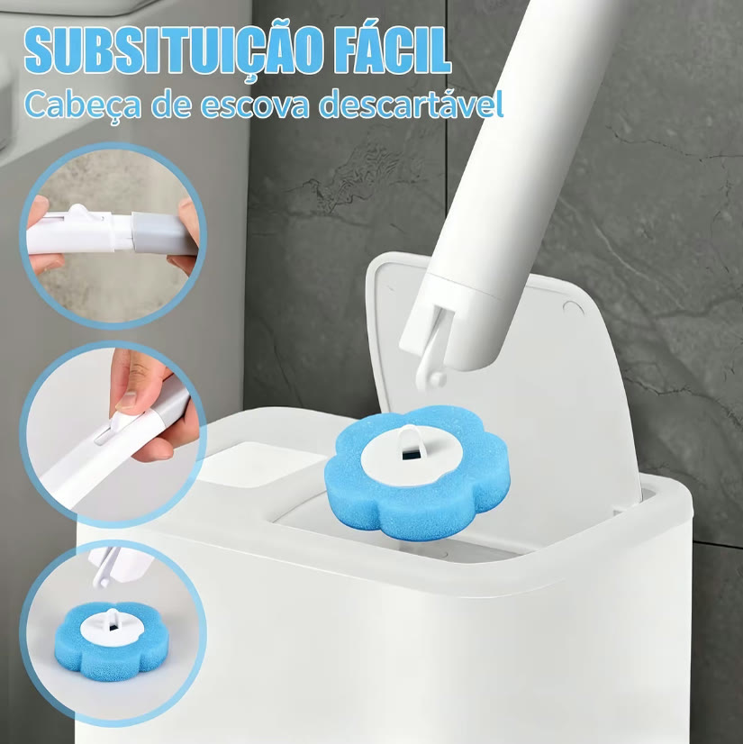
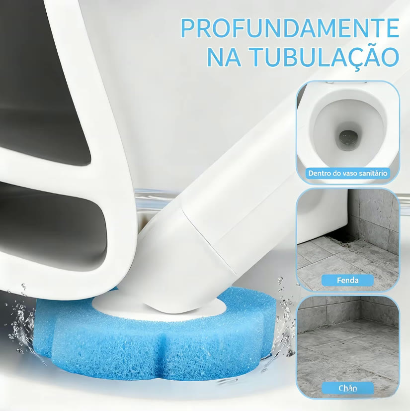
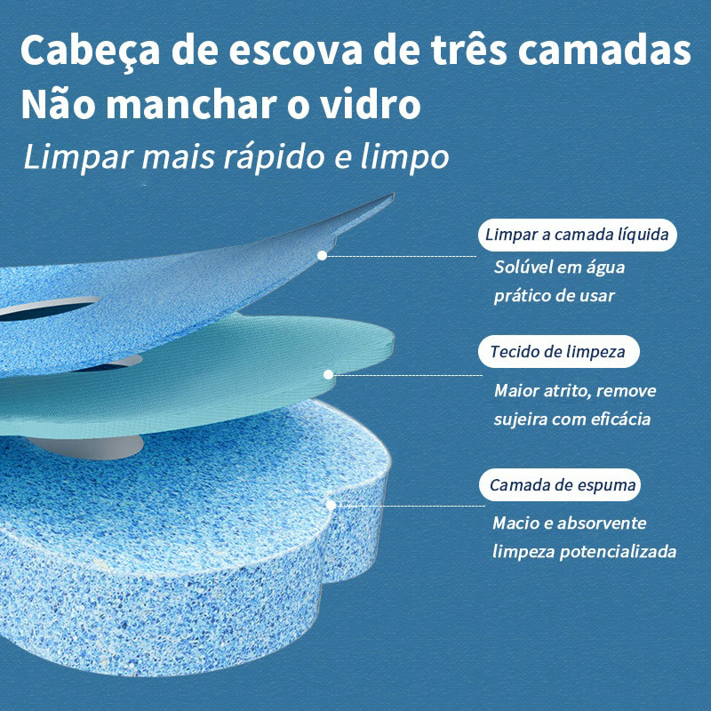
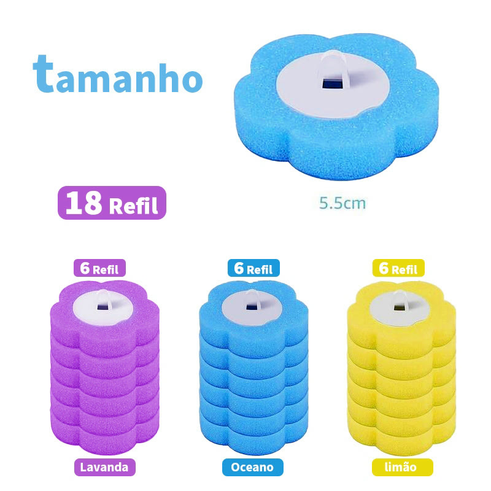

Achado nº 60
Escova sanitária com refis descartáveis e suporte







O que diz a página oficial do produto
- É uma escova sanitária da marca Brilho Novo: cabo, suporte e cabeças descartáveis (refis) em forma de flor que vão na ponta do cabo
- O kit mais simples vem com 1 escova, 1 suporte e 6 refis; há kits com 2 escovas e até 36 refis, e um pacote só com 18 refis
- Pelas fotos do anúncio, o cabo mede 40 cm e o refil, 5,5 cm
- É de plástico (PP e PS)
- Segundo o anúncio, o refil tem três camadas: uma camada líquida que se dissolve na água, um tecido de limpeza e uma espuma
- Segundo o anúncio, os refis vêm em três aromas: lavanda, oceano e limão
- Na Shopee, tem nota 4,9 com mais de 2.600 avaliações e mais de 8 mil vendidos
Link de afiliado: se você comprar por ele, a Achadaria pode receber uma comissão, sem custo extra para você. Preço, estoque e entrega são da loja e podem mudar; confira lá antes de comprar.